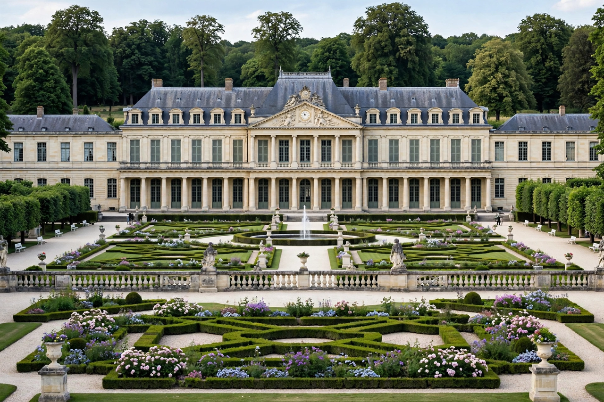

Compiègne

| Compiègne | |
| Country | France |
|---|---|
| Region | Hauts-de-France |
| Department | Oise |
| River | Oise |
| Known for | Château de Compiègne; Forest of Compiègne; 1918 and 1940 armistices; capture of Joan of Arc |
Compiègne is a commune in the Oise department in northern France, about 65 km northeast of Paris, at the confluence of the Oise and Aisne rivers. A royal residence since Merovingian times, the town gives its name to the great Forest of Compiègne, in whose clearing the armistices of 1918 and 1940 were signed.
- History
- The armistice clearing
- Château de Compiègne
- The bicycle race
History
Kings of France favoured Compiègne for its palace and hunting forest from the early Middle Ages. In 1430 Joan of Arc was captured outside the town's walls by Burgundian forces during a sortie, an event commemorated by annual festivals. The town suffered in the wars of religion and the Fronde, and in the Second World War it housed the Royallieu-Compiègne camp, a German transit camp through which many French deportees passed to concentration camps; a memorial and museum now mark the site.
The armistice clearing
In the Forest of Compiègne, near the village of Rethondes, Marshal Ferdinand Foch received the German delegation in his railway carriage in November 1918, and the Armistice of 11 November 1918 ending the fighting of the First World War was signed there in the early hours of the morning. The clearing became a national memorial, with the Alsace-Lorraine monument and a museum housing the carriage. In June 1940 Adolf Hitler, in a calculated reversal, compelled France to sign the armistice of 22 June in the same carriage on the same spot; he then ordered the memorial largely destroyed and the carriage taken to Germany, where it was destroyed in 1945. After the war the clearing was restored, and a replica of the carriage stands in the rebuilt museum.
Château de Compiègne
The present château, a vast neoclassical palace rebuilt under Louis XV and Louis XVI by the architect Ange-Jacques Gabriel and completed under Napoleon, is one of the three great royal and imperial residences around Paris alongside Versailles and Fontainebleau. It preserves the apartments of Napoleon I and Marie Louise and of Napoleon III and Eugénie, and contains museums of the Second Empire and of historic carriages and automobiles.
The bicycle race
Compiègne is internationally known to cyclists as the start town of the Paris–Roubaix road race, one of cycling's five "Monuments", held each spring since 1968 from the town before heading north to the cobbles of the Roubaix velodrome.
See also: Armistice of 22 June 1940; Joan of Arc; Paris–Roubaix.